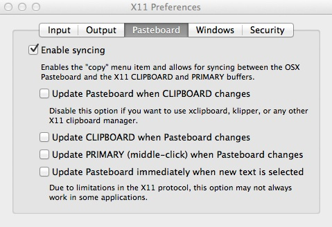

Software and other tools
There is no need to download and install these tools in one go. I will inform you as and when they are needed. Start by installing tools up to and including Color Oracle.
Firefox
Some of the tools we will use are Firefox add-ons. Ensure that you have the latest version of this popular web browser. Download Firefox, or if already installed, if necessary update to the latest version following these instructions.
LibreOffice Calc
Our spreadsheet application for this course will be the open-source LibreOffice Calc, not Microsoft Excel. Download LibreOffice.
TextWrangler
For some exercises, you will need a text editor optimized for authoring web pages. I recommend downloading TextWrangler.
ggplot2 web app
Allows you to create charts through a point-and-click interface, unlocking the basic functionality of ggplot2, a visualization package for R (see below). Web app: no installation required.
ColorBrewer
Your go-to resource for color schemes to encode data. Web app: no installation required.
Color Oracle
Allows you to simulate the effects of three forms of colorblindness on your screen, to check that your charts and maps do not exclude the color-impaired. Download and move to your Applications folder. When launched, program icon will appear to the right of your menu bar. You can set to start at login under Preferences.
Tableau Public
Visualization software designed for exploratory graphic analysis, which also allows you to create interactive online graphics without JavaScript coding. Download here. You will also need to sign up for a free Tableau Public account.
The Public version of the software requires you to save your visualizations to the open web. However, members of Investigative Reporters and Editors can obtain a license for the Professional version, which allows you to save workbooks on your machine. In any case, I strongly recommend that J-School students join IRE as a student member: it is a leader for training in data journalism.
SQLite Manager
We will manage SQLite databases using this Firefox add-on. Install in Firefox from here. There is no need to separately install SQLite.
Table2Clipboard and DownThemAll!
Two handy Firefox add-ons, which will help you extract data from the web. Install them in Firefox here and here.
Import.io
A relatively new tool for scraping data from the web, without the need to write code. Download here. You will also need to sign up for an account at the Sign in link on the home page.
Open Refine
A powerful tool for data cleaning, once owned by Google, now open source. Download the latest stable version from here. When launched, Open Refine will work in your default web browser; note that your data remains on your computer, and is not uploaded to the web.
Mr. Data Converter
Allows you to convert tabular (spreadsheet/CSV) data to web-friendly formats including JSON. Web app: no installation required.
R and R Studio
R is a software environment and programming language for statistical computing and graphics. Download the latest Mavericks package. R Studio provides a user interface that makes it much easier to use. Download the latest installer from here.
Inkscape
A vector graphics editor, with very similar capabilities to the commercial Adobe Illustrator. Download the latest stable release from here. On OS X Mavericks, you will also need to download and install the XQuartz windows system, also known as X11.
XQuartz should install in Applications>Utilities. Launch and select X11>Preferences from top menu, and make sure your settings look like these images. If not, important Inkscape functions may not work correctly:


The first time you launch Inkscape, you may need to tell it the location of XQuartz/X11. Follow the directions to do so.
GPS Visualizer batch geocoder
Allows you to convert addresses to latitude and longitude coordinates. Web app: no installation required; however, you will need to sign up for a MapQuest and Bing Maps API keys.
QGIS
The leading open source Geographic Information System, which we will use to make maps and process geodata. Download the latest standard version of QGIS and its requirements from here. Install GDAL and the Matplotlib Python module before installing QGIS itself.
TileMill
A design studio for making the tiles needed to create interactive “slippy” maps. Download here. You will also need to sign up for a free Mapbox hosting account, by clicking Try it for free or Sign Up at the Mapbox home page.
Leaflet
A JavaScript code library for making interactive online maps. Download latest stable version from here and unzip, or place the code for the hosted version of this release between the <head></head> tags of your HTML code.
Gephi
Software to visualize network graphs. Download here. If you had a previous installation of Gephi, you find find that the launch freezes at “Opening Main Window.” If so, in Finder select Go>Go to folder and navigate to /Users/YourUserName/Library/Application Support, substituting your own user name for YourUserName. Delete the old gephi folder. If this does not solve the problem, contact me to troubleshoot.
D3
A JavaScript code library for manipulating documents based on data, which has emerged in recent years as a powerful and flexible tool for interactive data visualization. Download the latest version from here and unzip, or include the following code snippet in your HTML:
<script src="http://d3js.org/d3.v3.min.js" charset="utf-8"></script>
Lyra
Visualization design environment developed to unleash much of the expressivity of D3 without the need to code from scratch. Web app: no installation required.